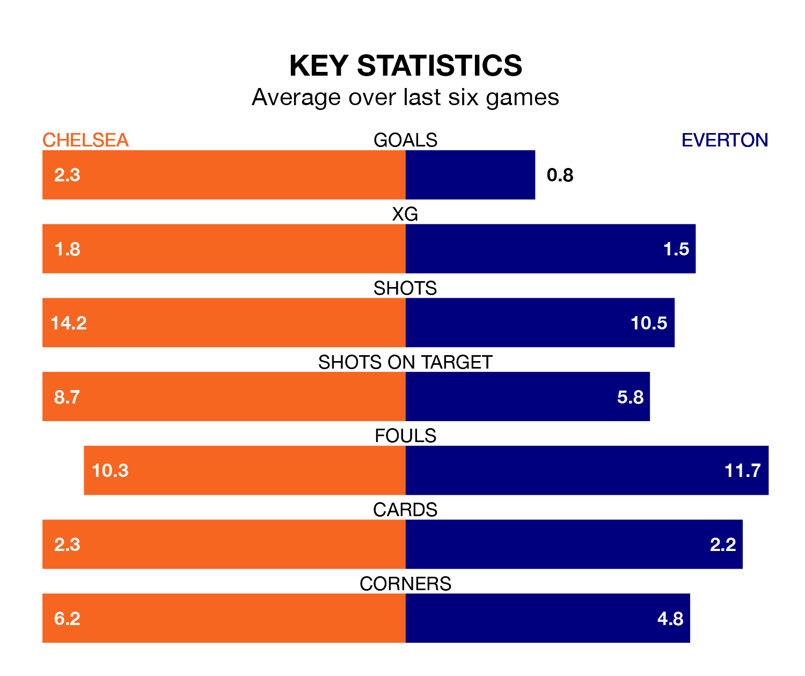

Chelsea are heavy favourites to keep all three points at home in Monday's late kick-off against Everton.
The Blues, who sit ninth in the Premier League with 30 games played, are priced at 1.6 to seal victory at Stamford Bridge.
Sitting five places and nine points behind them in the table, Everton are 4.8 to win with *Betting Company*, while the draw is at 4.1.
In Jordan Pickford, Everton can rely on one of the league's safest pair of hands. He has kept nine clean sheets in his 31 appearances this season, and only one other 'keeper – Arsenal's David Raya – has been able to prevent the opposition scoring on more occasions in the Premier League.
In Chelsea's net, Robert Sánchez has three clean sheets in 16 games. He has conceded a goal every 65 minutes, 20% more often than the 75 minutes between goals for Pickford.
In the last 10 years, Chelsea and Everton have played each other on 21 occasions. Chelsea won nine of them, Everton seven, and they drew five times.
On average, the Blues scored 1.6 goals and the Toffees 1.1 in those matches.
Their last meeting was on December 10, when Everton won 2-0 at home.
With 32 goals in 31 games so far this season, the Toffees are the league's joint-third-lowest scorers with 1.0 goals per game. But they are conceding fewer than average too, letting in 42 goals at a rate of 1.4 per game.
The Blues, meanwhile, are above average scorers, with 1.8 goals per game, compared to a league average of 1.6. They have conceded 1.7 goals per game.
The hosts are in mixed form in the Premier League, with two wins and four draws from their last six games.
With a win and two draws over that period, the away team's form is worse – they have taken five points from 18, compared to Chelsea's 10.
Chelsea's last match was on April 7, a 2-2 draw against Sheffield United, with Noni Madueke and Thiago Silva getting the goals for the Blues.
Everton beat Burnley 1-0 last time out, on April 6, with Dominic Calvert-Lewin on the scoresheet.
Updated: 11:20 (UTC), 09/04/24